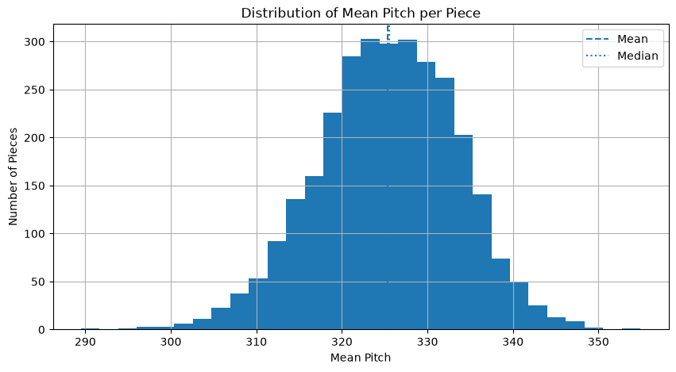
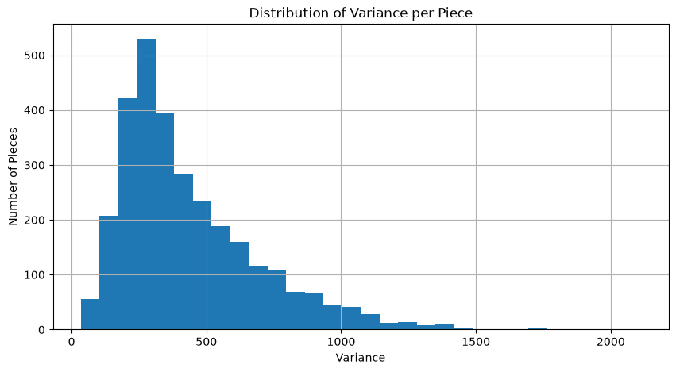

Descriptive Statistics#
This chapter summarizes the statistical properties of the dataset using descriptive measures and distribution analyses.
import pandas as pd
from pathlib import Path
DATA_RAW = Path("../data/raw").resolve()
csv_file = DATA_RAW / "Turkish maqam music pieces in time series format_3000 rows x 365 columns.csv"
df = pd.read_csv(csv_file)
X = df.iloc[:, 1:]
print("Shape:", X.shape)
Shape: (3000, 365)
print("Global Mean :", round(X.stack().mean(), 2))
print("Global Median :", round(X.stack().median(), 2))
print("Global Std :", round(X.stack().std(), 2))
print("Global Min :", X.min().min())
print("Global Max :", X.max().max())
Global Mean : 325.29
Global Median : 327.0
Global Std : 22.45
Global Min : 0.0
Global Max : 402.0
piece_means = X.mean(axis=1)
piece_means.describe()
count 3000.000000
mean 325.334495
std 8.178026
min 289.487671
25% 320.017123
50% 325.537960
75% 331.137124
max 354.923288
dtype: float64
import matplotlib.pyplot as plt
plt.figure(figsize=(10,5))
plt.hist(piece_means, bins=30)
plt.title("Distribution of Mean Pitch per Piece")
plt.xlabel("Mean Pitch")
plt.ylabel("Number of Pieces")
print("Number of pieces:", len(piece_means))
print("Minimum mean pitch:", piece_means.min())
print("Maximum mean pitch:", piece_means.max())
plt.axvline(piece_means.mean(), linestyle="--", label="Mean")
plt.axvline(piece_means.median(), linestyle=":", label="Median")
print("Mean :", piece_means.mean())
print("Median:", piece_means.median())
plt.legend()
plt.grid(True)
plt.show()
Number of pieces: 3000
Minimum mean pitch: 289.4876712328767
Maximum mean pitch: 354.92328767123286
Mean : 325.33449485537153
Median: 325.5379597283825

piece_variances = X.var(axis=1)
piece_variances.describe()
count 3000.000000
mean 435.237686
std 259.467586
min 34.616901
25% 248.752011
50% 360.911748
75% 559.372829
max 2110.490095
dtype: float64
plt.figure(figsize=(10,5))
plt.hist(piece_variances, bins=30)
plt.title("Distribution of Variance per Piece")
plt.xlabel("Variance")
plt.ylabel("Number of Pieces")
plt.grid(True)
plt.show()

top_mean = piece_means.nlargest(10)
top_mean
1625 354.923288
2560 349.288184
1713 348.427778
1702 347.516575
1056 347.208219
1635 347.043836
249 346.769863
1634 346.752874
1205 346.356164
1029 346.263014
dtype: float64
low_mean = piece_means.nsmallest(10)
low_mean
453 289.487671
2295 295.671233
1244 297.076712
1240 297.136986
688 298.175342
445 299.635616
2603 300.132768
2134 300.260274
2015 300.421918
487 300.613699
dtype: float64
summary = pd.DataFrame({
"Metric": [
"Number of Pieces",
"Time Steps",
"Missing Values",
"Global Mean",
"Global Median",
"Global Std"
],
"Value": [
len(df),
X.shape[1],
df.isnull().sum().sum(),
round(X.stack().mean(), 2),
round(X.stack().median(), 2),
round(X.stack().std(), 2)
]
})
summary
| Metric | Value | |
|---|---|---|
| 0 | Number of Pieces | 3000.00 |
| 1 | Time Steps | 365.00 |
| 2 | Missing Values | 20293.00 |
| 3 | Global Mean | 325.29 |
| 4 | Global Median | 327.00 |
| 5 | Global Std | 22.45 |